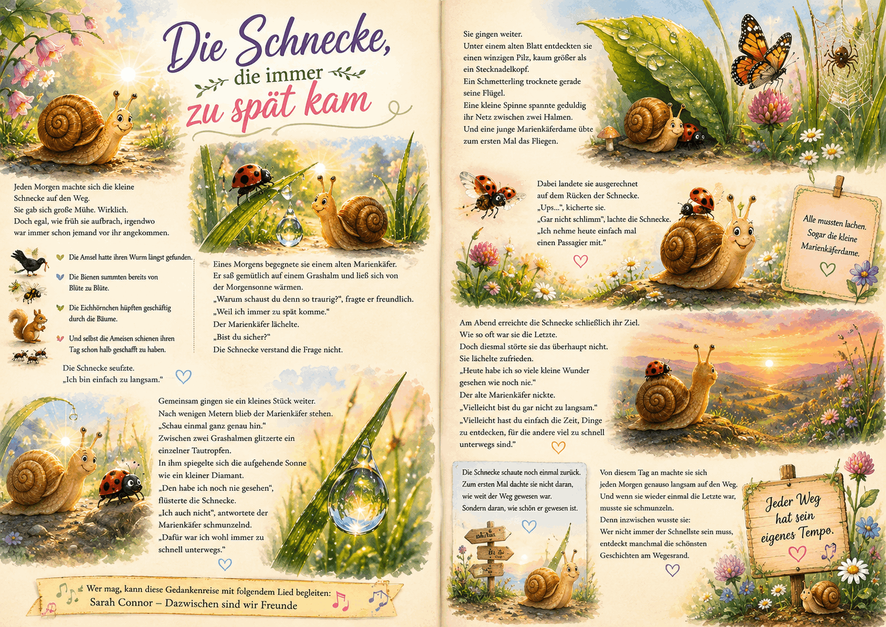

Best AI Website CreatorEine Gedankenreise zum Verschenken

🐌 Die Schnecke, die immer zu spät kam
Jeden Morgen machte sich die kleine Schnecke auf den Weg.
Sie gab sich große Mühe.
Wirklich.
Doch egal, wie früh sie aufbrach, irgendwo war immer schon jemand vor ihr angekommen.
Die Amsel hatte ihren Wurm längst gefunden.
Die Bienen summten bereits von Blüte zu Blüte.
Die Eichhörnchen hüpften geschäftig durch die Bäume.
Und selbst die Ameisen schienen ihren Tag schon halb geschafft zu haben.
Die Schnecke seufzte.
„Ich bin einfach zu langsam.“
Eines Morgens begegnete sie einem alten Marienkäfer.
Er saß gemütlich auf einem Grashalm und ließ sich von der Morgensonne wärmen.
„Warum schaust du denn so traurig?“, fragte er freundlich.
„Weil ich immer zu spät komme.“
Der Marienkäfer lächelte.
„Bist du sicher?“
Die Schnecke verstand die Frage nicht.
Gemeinsam gingen sie ein kleines Stück weiter.
Nach wenigen Metern blieb der Marienkäfer stehen.
„Schau einmal ganz genau hin.“
Zwischen zwei Grashalmen glitzerte ein einzelner Tautropfen.
In ihm spiegelte sich die aufgehende Sonne wie ein kleiner Diamant.
„Den habe ich noch nie gesehen“, flüsterte die Schnecke.
„Ich auch nicht“, antwortete der Marienkäfer schmunzelnd.
„Dafür war ich wohl immer zu schnell unterwegs.“
Sie gingen weiter.
Unter einem alten Blatt entdeckten sie einen winzigen Pilz, kaum größer als ein Stecknadelkopf.
Ein Schmetterling trocknete gerade seine Flügel.
Eine kleine Spinne spannte geduldig ihr Netz zwischen zwei Halmen.
Und eine junge Marienkäferdame übte zum ersten Mal das Fliegen.
Dabei landete sie ausgerechnet auf dem Rücken der Schnecke.
„Ups...“, kicherte sie.
„Gar nicht schlimm“, lachte die Schnecke.
„Ich nehme heute einfach mal einen Passagier mit.“
Alle mussten lachen.
Sogar die kleine Marienkäferdame.
Am Abend erreichte die Schnecke schließlich ihr Ziel.
Wie so oft war sie die Letzte.
Doch diesmal störte sie das überhaupt nicht.
Sie lächelte zufrieden.
„Heute habe ich so viele kleine Wunder gesehen wie noch nie.“
Der alte Marienkäfer nickte.
„Vielleicht bist du gar nicht zu langsam.“
„Vielleicht hast du einfach die Zeit,
Dinge zu entdecken, für die andere viel zu schnell unterwegs sind.“
Die Schnecke schaute noch einmal zurück.
Zum ersten Mal dachte sie nicht daran, wie weit der Weg gewesen war.
Sondern daran, wie schön er gewesen ist.
Von diesem Tag an machte sie sich jeden Morgen genauso langsam auf den Weg.
Und wenn sie wieder einmal die Letzte war, musste sie schmunzeln.
Denn inzwischen wusste sie:
Wer nicht immer der Schnellste sein muss,
entdeckt manchmal die schönsten Geschichten am Wegesrand.
🎵 Wer mag, kann diese Gedankenreise mit folgendem Lied begleiten:
" SILBERMOND - Langsam "
Quelle: YouTube – Originalvideo
"https://www.youtube.com/watch?v=XTT_X70F5no&utm_source=chatgpt.com"
Wir vergleichen uns oft mit anderen.
Manche scheinen schneller zu sein.
Erfolgreicher.
Weiter.
Dabei vergessen wir leicht, dass jeder Mensch seinen eigenen Rhythmus hat.
Diese Geschichte möchte nicht sagen, dass Langsamkeit besser ist als Schnelligkeit.
Sie lädt vielmehr dazu ein, den eigenen Weg mit etwas mehr Gelassenheit zu gehen.
Vielleicht entgeht uns nichts.
Vielleicht sehen wir einfach andere Dinge.
Manchmal entsteht eine Gedankenreise aus einem einzigen Bild.
In diesem Fall war es eine kleine Schnecke.
Zunächst schien sie nur langsam zu sein.
Doch beim Schreiben wurde immer deutlicher, dass sie etwas besitzt, worum sie viele andere beneiden könnten:
Zeit.
Zeit zum Schauen.
Zeit zum Staunen.
Zeit, die kleinen Wunder des Alltags wahrzunehmen.
So wurde aus einer vermeintlichen Schwäche eine ganz eigene Stärke – ohne dass die Schnecke sich dafür verändern musste.
Vielleicht hast auch du manchmal das Gefühl, anderen hinterherzulaufen.
Vielleicht scheint es, als wären alle schon weiter.
Doch jeder Weg hat sein eigenes Tempo.
Und manchmal lohnt es sich, nicht nur auf das Ziel zu schauen.
Sondern auf all die kleinen Augenblicke, die uns unterwegs begegnen.
Vielleicht wartet das Schönste gar nicht am Ende des Weges.
Sondern genau dort, wo du gerade bist.
Best AI Website Creator